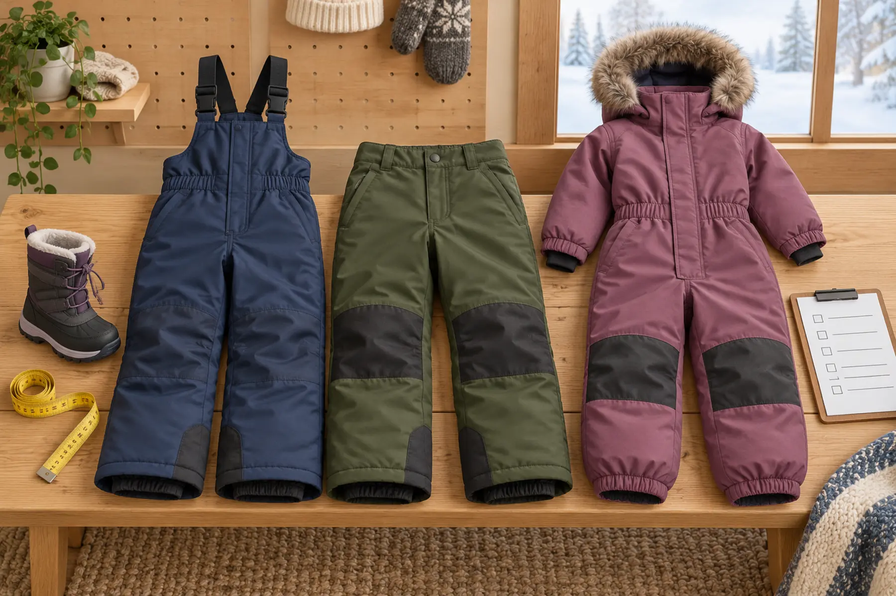

Bib snow pants
High coverage and adjustable shoulders help keep snow out during sledding and kneeling.
Tradeoff: more straps, bulk and bathroom steps.
WINTER GEAR · FIT-FIRST BUYING GUIDE · SCHOOL-AGE KIDS
The best snow pants are the pair a child can move in, keep over the boot, use in a bathroom and dry before the next outing. Start there; insulation labels come later.

Warmth depends on the whole system: weather, wind, wetness, base layers, activity, fit and time outside. The National Weather Service advises layers of loose-fitting, lightweight warm clothing, covered skin and limited exposure in cold conditions. Snow pants solve the lower-body shell-and-insulation problem; they do not set a safe temperature or justify a longer outing.
For school-age kids, the better buying question is: which category stays on during the actual activity without blocking movement, bathroom use or boot fit? Bibs control snow entry. Waist pants simplify changes. One-piece suits close the coat-to-pant gap. Every advantage creates a tradeoff. Buy for the dominant use, not a fantasy week at a ski resort.
Use the exact brand’s current chart, because a familiar size number is not a measurement. Measure waist, hip, inseam and height as requested, then repeat over the normal winter base and midlayer if the maker instructs. Compare to the garment’s stated body measurements, not another brand hanging in the closet. If the child falls between sizes, use the manufacturer’s guidance and a returnable trial—not a blanket “size up” rule.
Growth room is useful only while knees, seat, crotch and cuffs remain aligned. Too much rise can restrict the squat. Excess leg length can drag under a boot, hide hazards or defeat the internal gaiter. Oversized shoulder straps can drop a bib’s crotch and pull on the neck. A bargain that works “next year” but fails today’s movement test is storage, not gear.
Inspect skin after the test for red pressure marks at straps, waist, cuffs or hardware. Check that closures stay shut but can be operated with cold hands or gloves. If the child needs adult help, decide whether that help will actually be available. The kids’ glove guide uses the same rule: control matters as much as material.
Many snow pants use an inner gaiter designed to go over the boot shaft and an outer cuff that sheds snow. Follow the garment and boot instructions; do not improvise hooks, straps or tucking methods that create pressure, snagging or moisture paths. The gaiter should cover the boot opening without crushing the calf. The outer cuff should not drag under the heel or catch on traction devices.
Test with the exact winter boot. A slim cuff may not fit a bulky boot; a wide cuff can flap or drag. Check whether the child can see and control every snap, zipper or elastic. After walking indoors on a clean surface, confirm the pant has not ridden up. Fit is a system, which is why the footwear fit guide starts with the real sock and route rather than a shoe category alone.
“Waterproof,” “water-resistant” and “snowproof” are not interchangeable promises. Read what the manufacturer says about the finished garment, seams, treatment, testing and care. A fabric rating alone does not describe zippers, seat, knees or stitched areas. For wet snow or long sitting, seat and knee construction matter more than a marketing adjective.
Insulation weight is not a universal temperature rating. A highly active child may need less insulation and better venting; a child sitting at a winter event may need more whole-body warmth and a shorter exposure. Never convert a fill number into a safe-weather cutoff. Use the actual forecast and the family weather cutoff. If clothing becomes wet or the child is shivering, numb, confused, clumsy or unusually quiet, end the exposure and use appropriate medical guidance.
Do not add thick or puffy layers under a child restraint unless the vehicle and restraint manufacturer explicitly permit that setup. Winter travel clothing and on-snow clothing may be different systems. Follow the exact car-seat and vehicle manuals.
The approved Amazon links below are category searches, not tested recommendations. Search results, sellers and claims change. Confirm the exact manufacturer, measurements, finished-garment protection, care, recall status and return window. No image on this page depicts an affiliate product.
Follow the care label. Some finishes depend on specific washing, rinsing, drying or reactivation instructions; fabric softener or high heat may be prohibited. Empty pockets, fasten closures as directed, dry the garment completely and inspect seat, knees, cuffs, gaiters and seams. Do not store wet gear in a closed pack. Pair the pants with the base-fleece-shell system and use the hand-warmer recall gate only as supervised backup—not as a cure for poor clothing fit.
Keep the garment only if the child can dress, squat, kneel, sit, use the bathroom, overlap the real boot and remove it; the closures work; the current size leaves controlled room; the care process fits the household; and the exact item has no active recall. Otherwise return it while the window is open. Brand loyalty is not a reason to keep a bad fit.
MAKE THE DAY COUNT
Build the plan your family can finish well, then leave enough energy for the next part of the day.
More family plansTHE USEFUL STUFF
These are practical categories to compare—not a reason to overpack. Check fit, specifications and current reviews before buying.
Paid links: As an Amazon Associate I earn from qualifying purchases. You pay no additional cost.
Compare current body measurements, strap range, rise, boot gaiter, finished-garment weather claim, care and return terms on the actual child.
See current options → COMPARE ON AMAZONPrioritize independent closures, squat coverage, waist security, boot overlap and the maker’s exact weather-protection and care instructions.
See current options → COMPARE ON AMAZONCheck torso length, crouch freedom, bathroom access, boot cuffs, full-garment drying, car-seat guidance and return terms before keeping one.
See current options →